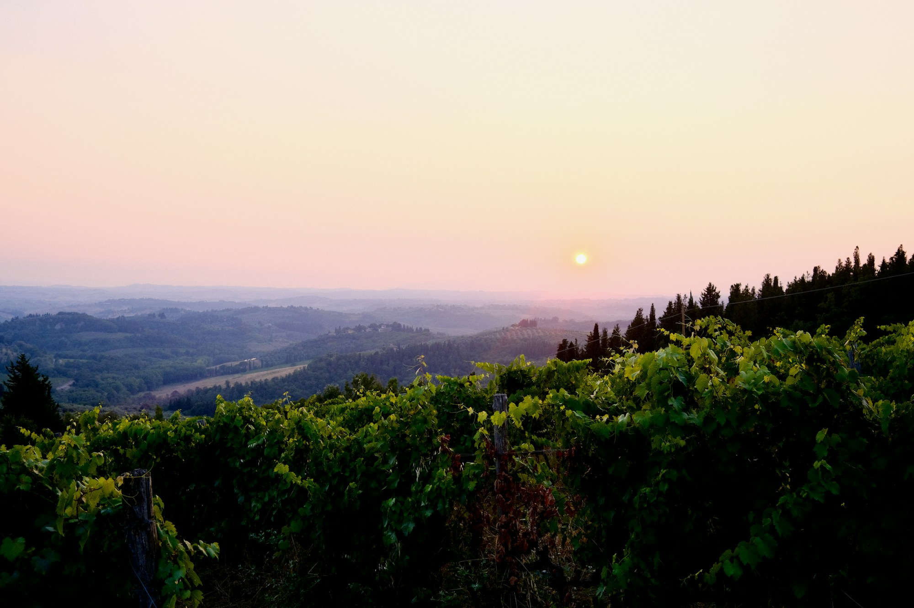

Food has a way of revealing what guidebooks cannot. A morning market, a family recipe or a bottle shared with the person who made it can tell you as much about a destination as any landmark.
We create journeys that bring you closer to the flavours, traditions and people that define a place, from celebrated restaurants to small kitchens you might otherwise never find.
The Experience
A gastronomic journey is about more than reservations.
It is the conversation with a winemaker in the cellar, the chef who explains why a dish belongs to that region and the market stall that has been serving the same speciality for generations.
We balance sought-after dining with experiences that feel more personal, choosing each moment for its quality, atmosphere and sense of place.
Wine and the Landscape
The world’s great wine regions are among its most beautiful places to travel.
Spend your days moving between private estates, meeting producers and enjoying long lunches overlooking the vines. Stay in a countryside hotel where the cellar is as considered as the rooms, and allow enough time for the landscape itself to become part of the experience.
